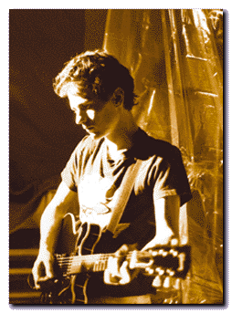

|  | “The first ever Galaxie 500 show was during the summer of 1987 at my apartment on Front St. in Manhattan. We played 4 or 5 songs, I can’t remember what they were, but I remember being pleased that I didn’t break any strings....Damon and Naomi were in town for the summer, and Naomi had decided to pick up the bass guitar - I guess that’s when the band was born for real....” -- Dean Wareham |